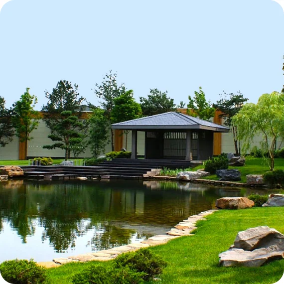

Декоративный пруд
Проектируем водоём с водными и прибрежными растениями, оформляем берега и подбираем рыбу для зарыбления.
Проектируем и строим декоративные и плавательные пруды. Готовим котлован, устанавливаем фильтрацию, оформляем берега и заселяем водоём рыбой.

У каждого водоёма свой проект. По нему готовим участок, подбираем материалы и оборудование, оформляем пруд и берега.
Выберите этап, чтобы увидеть изменения на схеме.
Инженер осматривает участок. Готовим индивидуальный проект, планируем площадку, выкапываем чашу и вывозим грунт.
Делаем песчаную подсыпку, укладываем геотекстиль и гидроизоляцию. При необходимости добавляем дренаж и выполняем бетонные работы.
Устраиваем биоплато или ставим внешний биологический фильтр. Монтируем и настраиваем оборудование.
Наполняем пруд, оформляем водную и прибрежную зоны растениями и зарыбляем водоём по проекту.
Построим новый водоём или выполним работы на существующем пруду.
Проектируем водоём с водными и прибрежными растениями, оформляем берега и подбираем рыбу для зарыбления.
Проектируем водоём для купания. На участке обсуждаем его расположение, размеры и способ фильтрации.
Ремонтируем и реконструируем водоёмы, оформляем берег и водную зону, выполняем зарыбление и обслуживание.
Сообщите, где находится участок, какой пруд нужен и какого он будет размера. Если водоём уже есть, пригодятся фото и описание нужных работ.